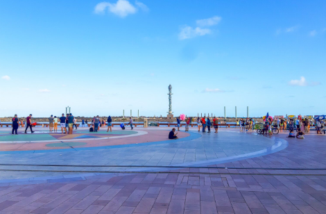
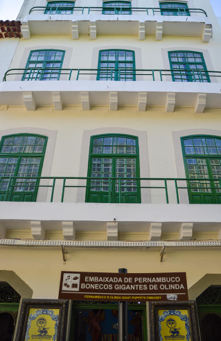
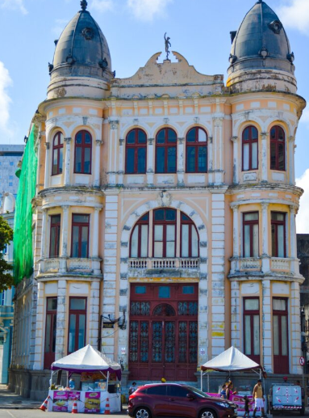
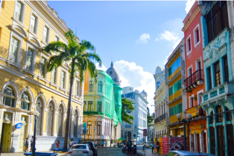
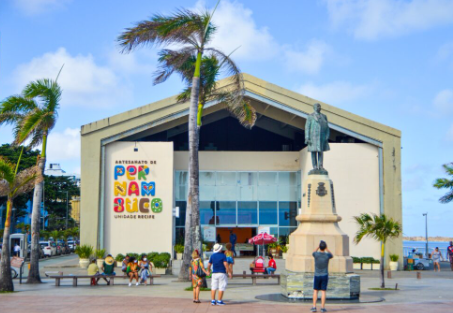
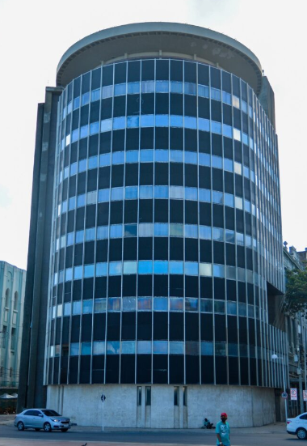

A Praça Rio Branco, conhecida como Marco Zero, é um ícone histórico e cultural de Recife,capital de Pernambuco.Situada no bairro do Recife,
esta praça é o ponto de partida para as medidas oficiais de distâncias rodoviárias na região.
Além de ser um marco geográfico, a praça é um espaço de convivência que celebra a arte, com a rosa dos ventos do pintor Cícero Dias e as esculturas de Francisco Brennand.
Durante o carnaval, transforma-se no coração das festividades, refletindo a vibrante cultura pernambucana.
Pontos turisticos proximo ao Marco Zero
Para saber mais sobre os pontos turisticos click nas fotos.




